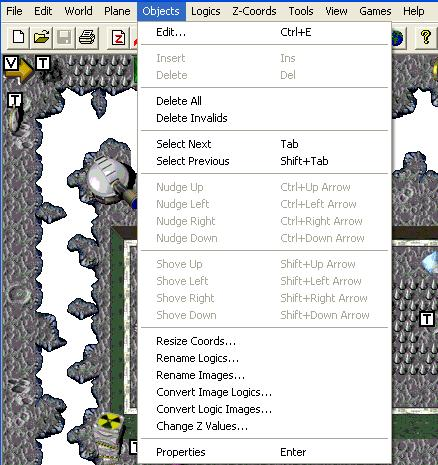

| Objects Menu  |
|---|
| Edit… (Ctrl+E or right-click on an object) |
| This will display the "Edit Objects" dialog box that is used to enter game logic information. See the "Game Logics" section for more information. Several drop-down menu itemz ghosted if no object selected. |
| Insert (Ins) |
| I don't think this feature does anything. |
| Delete (Del) |
| This will delete a selected object. |
| Delete All |
| This will delete all objects in a level. This feature is not used often. |
| Delete Invalids |
| This will delete all invalid objects in a level. I don't think you will use this since there should be no invalid objects in the shipped version of the game. |
| Select Next (Tab) |
| This will select the next object in the level. |
| Select Previous (Shift+Tab) |
| This will select the previous object in the level. |
| Nudge Up (Ctrl+Up Arrow) |
| This will move the selected object 1 pixel in the desired direction. |
| Nudge Left (Ctrl+Left Arrow) |
| This will move the selected object 1 pixel in the desired direction. |
| Nudge Right (Ctrl+Right Arrow) |
| This will move the selected object 1 pixel in the desired direction. |
| Nudge Down (Ctrl+Down Arrow) |
| This will move the selected object 1 pixel in the desired direction. |
| Shove Up (Shift+Up Arrow) |
| This will move the selected object 5 pixels in the desired direction. |
| Shove Left (Shift+Left Arrow) |
| This will move the selected object 5 pixels in the desired direction. |
| Shove Right (Shift+Right Arrow) |
| This will move the selected object 5 pixels in the desired direction. |
| Shove Down (Shift+Down Arrow) |
| This will move the selected object 5 pixels in the desired direction. |
| Resize Coords… |
| I have no idea what this feature is used for. I have never used it on any game that we (Monolith Productions, Inc.) have developed (Claw, Get Medieval, or Gruntz) |
| Rename Logics… |
| This is a very handy feature for renaming the logics for all objects in a level that have a common object name. Important: Logic names are case sensitive! |
| Rename Images… |
| This is a very handy feature for renaming the images for all objects in a level that have a common image name. Important: Image names are case sensitive! |
| Convert Image Logics… |
| This is a very handy feature for changing the logic name for all objects in a level that have a common image name. |
| Change Z Values… |
| This is a very handy feature for changing the "Z-order" for all objects in a level that have a common logic name. Important: Logic names are case sensitive! |
| Properties (Enter) |
| This will open an Objects Dialog Box (usually) for the first Object created. Very handy!!! |